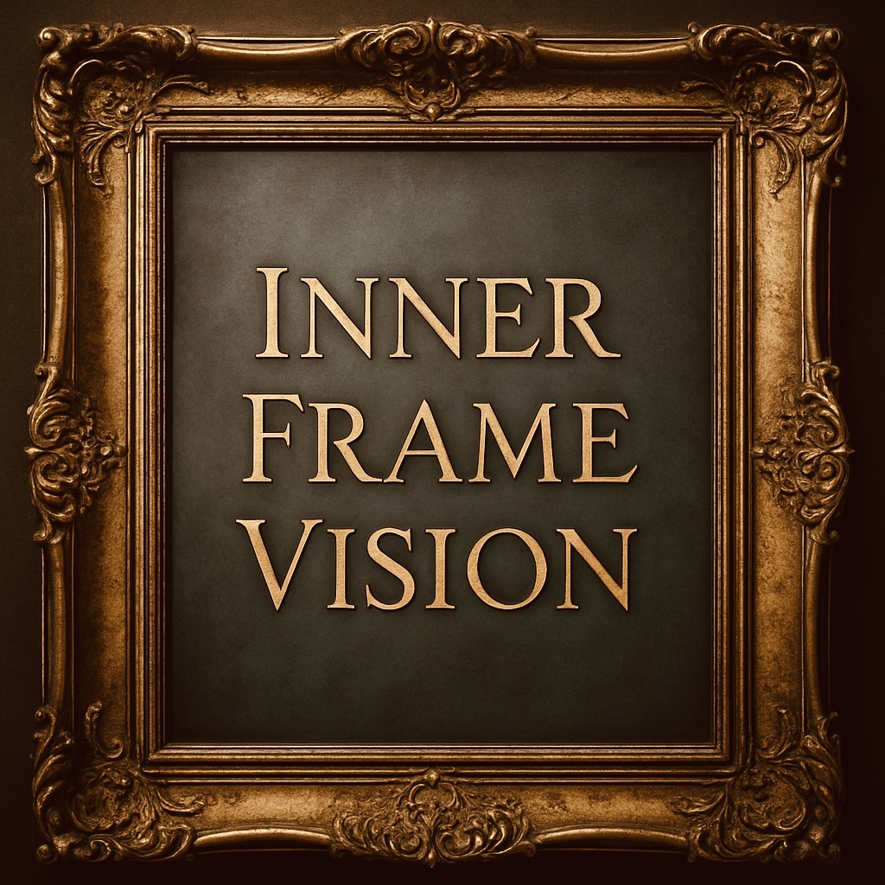
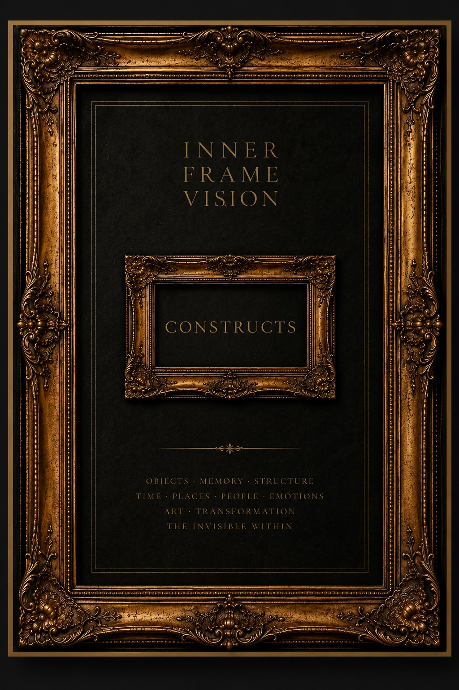

Inner Frame Constructs is an artistic direction within the Inner Frame Vision movement. It explores the transformation of objects through framing, spatial interaction and structural reconfiguration. Independent objects become components of new artistic constructions in which form, meaning, function and relationships are continuously redefined.
An object becomes a frame, and a frame becomes an object. Inner and outer space exchange their roles. Objects may intersect, merge and generate new artistic realities while preserving or transforming their identity.
Every construction exists as an independent work while simultaneously remaining part of the unified museum language of Inner Frame Vision.